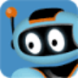
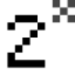

МолекулаАгрегаторы нейросетей
Молекула объединяет модели для текстов, изображений, видео и музыки. В одном аккаунте можно подобрать инструмент под этап работы, сохранить инструкции проекта и использовать готовые роли.
К задаче в МолекулеРаздел «Анализ изображений»: варианты ИИ для этой задачи, описания возможностей и переходы к обзорам. Сравните несколько решений на одинаковом примере.
Получите предположение о шрифте на вывеске, загрузив достаточно чёткий снимок букв. Укажите, нужна ли точная гарнитура или близкое направление; проверьте характерные знаки и помните, что похожий шрифт не доказывает совпадение с оригинальным файлом.
Разбери шрифт на моей фотографии вывески: опиши форму букв, засечки и пропорции. Предложи близкие направления, отдели уверенные наблюдения от предположений; точное совпадение гарнитуры не утверждай без проверки.
Молекула объединяет модели для текстов, изображений, видео и музыки. В одном аккаунте можно подобрать инструмент под этап работы, сохранить инструкции проекта и использовать готовые роли.
К задаче в Молекулеjpghd помогает восстанавливать старые снимки и предлагает доступ через веб-сайт или приложения. Возможности ориентированы на исправление повреждений и обработку фотографии. Сначала проверьте небольшой фрагмент с лицом и мелкими деталями: улучшенная картинка может выглядеть убедительнее оригинала, но не подтверждает документальную точность восстановленных элементов.
Movavi Picverse редактирует фотографии в настольной программе с ИИ-улучшением изображения. Пользователь может убирать окружение, выполнять ретушь и работать с RAW-исходниками. Экспорт предусматривает разные размеры и форматы, объединяя правку снимка с подготовкой подходящего файла для дальнейшего просмотра, размещения или передачи в другую программу.
NSFW JS предназначен для модерации изображений и определения потенциально непристойного содержания. В исходных сведениях также отмечено размытие материала. Это инструмент проверки контента, а не его создания. Перед включением в приложение изучите ошибки на своей разрешённой подборке: автоматическая категория не заменяет контекст и ручную оценку спорного случая.
Сравнивать «Oyper» с другими инструментами раздела «Мода, стиль и образы» удобнее на одинаковом исходном материале.

Replicate позволяет запускать модели через подключаемый сервис. В приложении важно правильно передать входные данные и обработать формат возвращаемого результата.
«TargetFox» работает с материалами для социальных площадок.

Для «TinEye» сначала определите свою задачу и требуемый результат. Карточка относится к направлению «SEO-инструменты».
«AfterShoot» помогает исправлять и оформлять фотографии.
«coronarography AI» представлен в разделе «Здоровье». При выборе проверьте нужную операцию и условия работы с результатом.
Сравнивать «DirectAI» с другими инструментами раздела «Разработка» удобнее на одинаковом исходном материале.
«Everypixel» представлен в разделе «Русские». При выборе проверьте нужную операцию и условия работы с результатом.
«Imagetomp3» представлен в разделе «Анализ изображений». При выборе проверьте нужную операцию и условия работы с результатом.
Для «IRA-Labs» сначала определите свою задачу и требуемый результат. Карточка относится к направлению «Анализ данных».
Сравнивать «Jetcounter» с другими инструментами раздела «Анализ данных» удобнее на одинаковом исходном материале.
«Remini» помогает исправлять и оформлять фотографии.
Сравнивать «Alt Text Generator» с другими инструментами раздела «Тексты и контент» удобнее на одинаковом исходном материале.
«CodeFormer» помогает исправлять и оформлять фотографии.
«FilterPixel» помогает исправлять и оформлять фотографии.
Сравнивать «GPT-4V» с другими инструментами раздела «Анализ изображений» удобнее на одинаковом исходном материале.
Сравнивать «Image to Text» с другими инструментами раздела «Анализ изображений» удобнее на одинаковом исходном материале.
Для «OpalAi ScanTo3D» сначала определите свою задачу и требуемый результат. Карточка относится к направлению «Анализ изображений».
Сравнивать «Photofeeler» с другими инструментами раздела «Анализ изображений» удобнее на одинаковом исходном материале.
PMcardio анализирует изображение ЭКГ с помощью искусственного интеллекта. Продукт формирует подробный отчёт и предоставляет рекомендации по дальнейшему рассмотрению состояния пациента. В описании также представлены направления лечения и сортировки обращений, которые сопровождают разбор исходной записи в медицинском процессе.
Для «Smart Engines» сначала определите свою задачу и требуемый результат. Карточка относится к направлению «Анализ данных».
Сравнивать «TwinFinder» с другими инструментами раздела «Развлечения» удобнее на одинаковом исходном материале.
«Uncrop» помогает исправлять и оформлять фотографии.
Сравнивать «X-ray Interpreter» с другими инструментами раздела «Здоровье» удобнее на одинаковом исходном материале.
Сравнивать «ChatPhoto» с другими инструментами раздела «Чат-боты и ассистенты» удобнее на одинаковом исходном материале.
«Erase It!» убирает выбранные объекты из визуального материала.
Сравнивать «Looksmax AI» с другими инструментами раздела «Красота» удобнее на одинаковом исходном материале.

Roboflow предоставляет средства для разработки решений компьютерного зрения и машинного обучения. Основой обучения служит работа с изображениями-примерами, на которых обучается модель. Платформа предназначена для подготовки подобных задач и обучения по визуальным данным; заявленные сроки и достаточный объём выборки нельзя считать универсальными для любого проекта.
ScantextAI извлекает текст из изображений, отсканированных страниц и PDF с помощью OCR. Полученное содержимое можно использовать для поиска и редактирования вместо работы только с картинкой документа. Продукт предназначен для переноса сведений из визуальных исходников в текстовый вид с дальнейшим разбором извлечённой информации.
Сравнивать «Третье мнение» с другими инструментами раздела «Здоровье» удобнее на одинаковом исходном материале.
«AI Keywording Tool» представлен в разделе «SEO-инструменты». При выборе проверьте нужную операцию и условия работы с результатом.
«AI Powered Image Upscaler» увеличивает изображения для дальнейшей обработки.
AIminded предлагает ИИ-инструменты работы с изображениями в контексте планирования онкологического лечения. Описанные возможности относятся к профессиональному медицинскому процессу. Перед применением нужно выяснить назначение конкретного модуля и требования к данным; выводы требуют проверки квалифицированным специалистом и не являются основанием для самостоятельного выбора лечения пациентом.
«photes.io» помогает упорядочить рабочие заметки.
Сравнивать «PimEyes» с другими инструментами раздела «Поиск информации» удобнее на одинаковом исходном материале.
Сравнивать «RePic AI» с другими инструментами раздела «Редактировать изображение» удобнее на одинаковом исходном материале.
«TTcare» представлен в разделе «Домашние животные». При выборе проверьте нужную операцию и условия работы с результатом.
«Vision Labs» работает с задачами проверки личности.
Сравнивать «CalendarScan» с другими инструментами раздела «Поиск информации» удобнее на одинаковом исходном материале.
Сравнивать «Celsus» с другими инструментами раздела «Анализ данных» удобнее на одинаковом исходном материале.

«Final2x» представлен в разделе «Редактировать изображение». При выборе проверьте нужную операцию и условия работы с результатом.
Для «FotoFix» сначала определите свою задачу и требуемый результат. Карточка относится к направлению «Редактировать изображение».
«OLOCR» помогает изменять и преобразовывать PDF.
Сравнивать «Replace Anything Online» с другими инструментами раздела «Редактировать изображение» удобнее на одинаковом исходном материале.
Страница 1 из 2